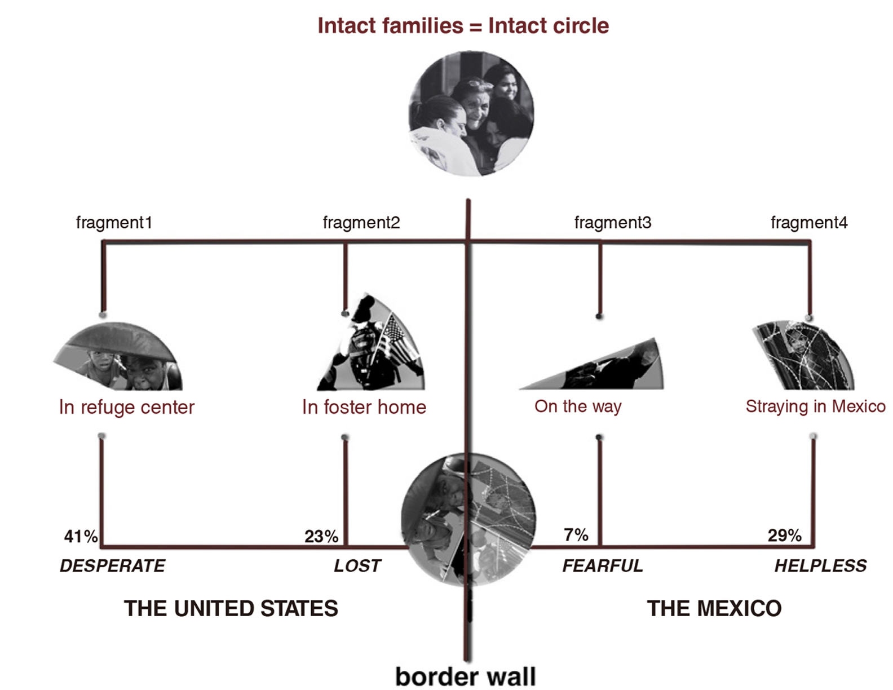

Welcome to my world, I am a landscape designer who are concentrate on making balance between nature and human. with the world changing, how to make a evolving connection between landscape and human is what I am concerned
I am also a UX designer, who want to take a sustainable perspective to create something to change the current world
THE BROKEN CIRCLE:by U.S and Mexico border wall
San Diego and Tijuana are among the busiest urban areas between the U.S and Mexico's border wall.
However, because of complex social, political, cultural factors, recently, the number of illegal
immigrants in Mexico is growing, which causes many complex social problems. The design will make a
VIRTUAL FORM-CONNECTION: coordinating complex social environment of national boundary line. Making a
memorial garden which divided by the border wall will create a potential opportunity for people to
reunite.
history: In 1846, May 13, the United- States declared war on Mexico. Before 1900, the US, Mexico border was in
a open condition. American employers needed a number ofMexican immigrants. The United States Congress
passed the National Origin Limitation Act. During 1942 to 1964, there are many illegal Mexican immigrants enter the
United States. Increasing illegal Mexican immigrants enter the United-States to find jobs. Illegal immigration to the
United States was rampant again, causing thousands of families break up.
the mapping analysis
the memory of border wall

design concept
Regardless of those news reports, no matter who we are,we do have the right to huge, company, support our families every day, to own a integrated family, do not we? Eventhough the wall is higher, it will never block such families dream to reunite ....... lt are such four situations that tore numerous intact families....So elements engender design is simulate the authentic border wall to hinter these fans space and engender the emotion resonace. REFUGE CENTER:The concave lawn and rising stairs imply the children's mental blocks in such foster home. FOSTER HOME:The sinking stairs imply the kids' miserable experience in the refugee center. REUITE SITE:The stairs rising space with lawn and pond build a sacred atmosphere for families to reunite. ON THE WAY:The low elevation empty place exggerates the children's fearful when they cross the border wall. STRAYING IN MEXICO:Lawns of different heights and stair reducing space create the chidren's suvival hope in turbulent country.